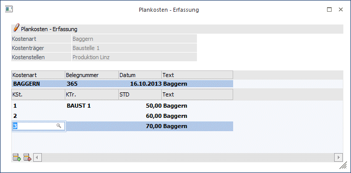

In der Plankosten Erfassung erfolgt die Einbuchung der tatsächlichen Istbeschäftigung (Istmenge). Dadurch errechnet das Programm aufgrund der geplanten Kosten / Einheit (siehe Kostenartenstamm) und der tatsächlichen Istbeschäftigung die Sollkosten. Diese können Sie im Menü Auswertungen/Plankostenträger-vergleich abrufen.

Ø Kostenart
Eintragung einer Plankostenart. Mit dem Matchcode oder F9 gelangen Sie in den Kosten-Matchcode mit der Anzeige aller vorhandenen Plankostenarten. Außerdem wird geprüft, ob der Benutzer die Berechtigung hat (WinLine KORE/Stammdaten/Kostenart), die eingegebene Kostenart zu verwenden.
Ø Belegnummer
Belegnummer, max. 20stellig, alphanumerisch. Die Belegnummer ist manuell einzugeben.
Ø Datum
Eingabe des Buchungsdatums.
Ø Text
Buchungstext, max. 50stellig, alphanumerisch.
Ø KSt.
Eingabe der Kostenstellennummer, der der Betrag zugeordnet werden soll. Es wird geprüft, ob der Benutzer die Berechtigung hat (WinLine KORE/Stammdaten/Kostenstelle), die eingegebene Kostenstelle zu verwenden.
Ø KTr.
Eingabe der Kostenträgernummer. Es wird geprüft, ob der Benutzer die Berechtigung hat (WinLine KORE/Stammdaten/Kostenträger), den eingegebenen Kostenträger zu verwenden.
Ø Menge
Ist in der Plankostenart eine Einheit hinterlegt, wird die Bezeichnung Menge durch die Bezeichnung der Einheit ersetzt. Hier wird die tatsächliche Istbeschäftigung (Istmenge) eingetragen.
Ø Text
Der Buchungstext wird aus dem "Kopfteil" in die weiteren Zeilen übernommen und kann pro Zeile editiert bzw. individuell vergeben werden.
Buttons
Ø OK
Durch Drücken des OK-Buttons wird die Aufteilung abgespeichert.
Ø Ende
Mit dem Ende-Button wird das Aufteilungsfenster verlassen ohne dass die Beträge gespeichert oder gebucht wurden.
Ø Abbruch
Wenn Sie die Buchung abbrechen möchten, betätigen Sie den Abbruch-Button.
Ø Einfügen / Entfernen
Mittels dieser Buttons können neue Zeilen in die Tabelle eingefügt, bzw. bestehende entfernt werden.
Ø Tabelleneinstellungen speichern
Die Spalten einer Tabelle können grundsätzlich an beliebige Positionen verschoben, bzw. in der Breite entsprechend angepasst werden. Durch Anwahl des Buttons "Tabelleneinstellungen speichern" werden die Einstellungen benutzerspezifisch gespeichert und bei dem nächsten Aufruf des Programmpunktes wieder vorgeschlagen.
Ø Gesamteinstellungen speichern
Im Gegensatz zu "Tabelleneinstellungen speichern" können mit "Gesamteinstellungen speichern" mehrere Tabellenaufbauten gespeichert und nach Wunsch geladen werden. Zusätzlich werden Sonderfunktionen der Tabelle (z.B. "Spalte gruppieren") ebenfalls bei der Speicherung bedacht.